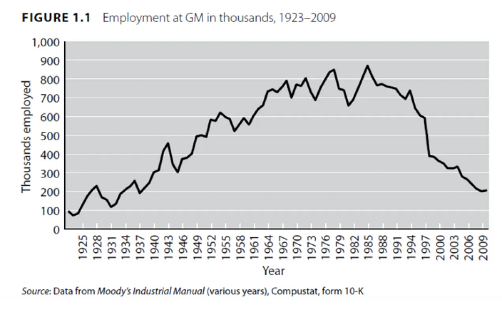

9 Fordism
Tooze
Henry Ford’s model of mass production, first pioneered with the Model T introduced in 1908. was credited with a gigantic and unprecedented surge in productivity. Ford’s River Rouge plant became a site of pilgrimage for industrial engineers from all over the world. In 1914, Ford’s introduction of the $5-day, made possible by the exhausting productivity of his mass assembly lines, transformed the wage-price bargain. By the mid 20th century Fordism had come to stand for a particularly American style of mass production, which would enable workers themselves to consume the fruits of their labour.
It is hard to exaggerate how closely the rise of US power In the 20th century was associated with the car. In the aftermath of World War II, a staggering 80 percent of all cars manufactured around the world were made in America. By the 1960s Detroit was the city with the highest per capita income in the United States.
Fordism was a productive force with geopolitical consequences. Detroit was pivotal to America’s emergence as the arsenal of democracy. If you could mass-produce cars, you could mass-produce bombers, that at least was Ford’s idée fixe.
It was a productivist vision that echoed down more than half a century to the present day, where both advocates of the Green New Deal and Donald Trump’s Operation Warp Speed cite mass production of aircraft in World War II as evidence for what American industry is capable of doing under the right kind of direction.
Today, figures from tech and finance are the pinups of capitalism. In the mid-century moment, car executives were at the cutting edge. In the 1950s and 1960s the Secretaries of Defense for Eisenhower, Kennedy and Johnson were auto executives - Charles Wilson of GM and Robert McNamara of Ford.
Fordism was not simply a system of mass production. It was also a social model. Insofar as America had a post-World War II welfare bargain, it was defined by the struggles between the auto firms and organized labour between the sitdown strike of 1936-1937 and the Treaty of Detroit struck in 1950 between General Motors and the United Autoworkers. This effectively set America on course for a model of welfarism based on private provision of health care and pensions, unemployment benefits and cost of living based wage adjustment. This agreement between the UAW and the auto industry founds the ongoing conflation in the United States between the “middle class” and the “working class”. Still today the workers represented by UAW are bargaining for their entire package of compensation, not simply wages.
For those who were part of the core automotive workforce this delivered much higher than average wages and corporate benefits.
Autoworkers remain amongst the best paid manual workers in the United States, but the remarkable ups and downs of the real compensation curve since the 1970s succinctly summarize the increasingly precarious and embattled nature of their privileges.

The global employment figures at GM tell a tale of the rise and decline of the industry. GM’s US employment peaked in 1979 at 618,365, making it the largest private employer in the United States. Worldwide employment was 853,000. Since then it has been one way decline. In 2022 GM employed 167,000.